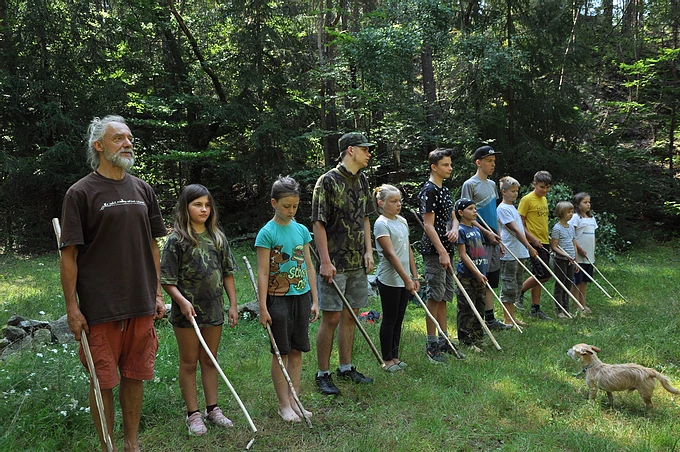

Jsme parta lidí, kteří rádi cvičí nenásilnou cestou. Učíme aikido a jógu děti i dospělé — bez ohledu na věk, kondici či zkušenosti.
Aikido je nenásilné moderní japonské bojové umění, které rozvíjí tělo i ducha. Na našem dójó se mu věnujeme spolu s jógou už od roku 2004, kdy jsme původní tiskárnu přeměnili na cvičební prostor.
Nejde nám o soupeření ani výkon — aikido u nás je spíše životní filosofií, která rozvíjí rovnováhu, sebedůvěru a klid.


Pohybová příprava spojující aikido a jógu pro předškolní děti a prvníčky.
Zjistit více
Oddíl pro školní děti a mládež všech úrovní — od začátečníků po pokročilé.
Zjistit více
Nábor probíhá celý rok. První trénink je zdarma, naučit se aikido není nikdy pozdě.
Zjistit více
Cvičíme Rádža jógu — vhodná pro každého, stačí pohodlný oděv a vůle cvičit.
Zjistit víceVýši příspěvku si určujete sami — od 0 Kč výše. Chceme, aby cvičení bylo dostupné opravdu každému, bez ohledu na finanční možnosti.
První trénink je nezavazující a u aikida pro dospělé zdarma. Stačí nás kontaktovat nebo přijít rovnou na hodinu.
Tělocvična v Domově Pod Kavčí Skálou
Marie Pujmanové 2046, 251 01 Říčany
pida.aikido@seznam.cz